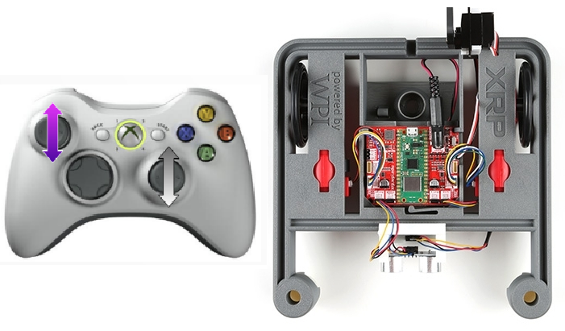
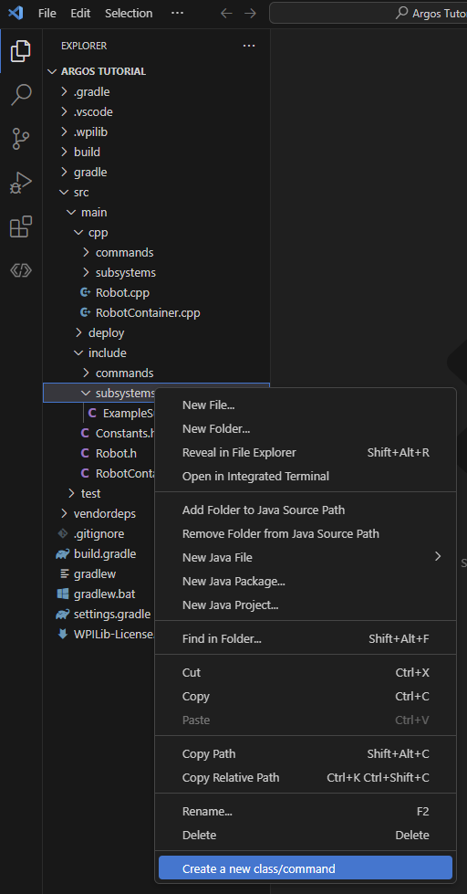
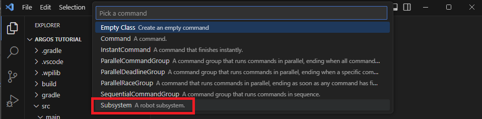
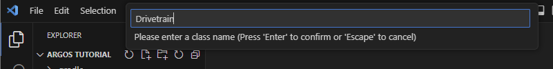

XRP Tank Drive
XRP Tank Drive Tutorial (C++ Command-Based)
Tank drive is a direct-drive control where one joystick is used for each side of the drive train. The left joystick moves the left motor forward and backward, and the right joystick moves the right motor forward and backward. To turn, you move one joystick forward and the other in reverse. This control scheme offers the driver complete control, but tends to have a steeper learning curve.
But, this scheme is the easiest to implement in software because of its simplicity!
If you have some experience programming, try implementing this drive control now. Otherwise, read on for step-by-step instructions.

The Pre-Code Workout 📊
Before we write any code, it's important to make a flow chart of what we need to do, in human readable tasks. When you are solving any problem in software, it's important to do a step like this either in your head, or on paper.
Let's start with listing out the tasks we need to perform:
- Turn robot left and right
- Drive forward and back
- Read left joystick from controller
- Read right joystick from controller
Now that we have that, let's make a chart of what our code needs to do. Programmers use flow charts a lot to visualize a plan for implementing code. Try to write your flowchart before looking at the provided one.
Flow Chart 📊
flowchart TD
a[Read right joystick from controller]
b[Read left joystick from controller]
c[Set left motor speed]
d[Set right motor speed]
s(start) --> a
a --> b
b --> c
c --> dWhile simple, it's important to keep the tasks at hand straight. I will walk you through how to do each of these things in code in the next section.
Time to Start Coding
If you haven't already created an XRP project, you'll need to do that now. See How to Create an XRP Project If you have, it's time to start coding!
Create a Drivetrain Subsystem
The first step is to create a subsystem for our drivetrain. A subsystem is a class that represents a mechanism on the robot. It should contain all the code for that mechanism, such as motors and sensors.
To create a new subsystem in VS Code with the WPILib extension:
1. Right-click on the src/main/include/subsystems folder in the file explorer.
2. Select WPILib: Create a new class/command.

3. Choose Subsystem from the list.

4. Name the new subsystem Drivetrain.

5. You should see two folder now in one in src/main/include/subsystems called Drivetrain.h and the other in src/main/cpp/subsystems called Drivetrain.cpp
Drivetrain.h header File
What is a Header File in C++?
Imagine you have a big toolbox, and inside it are all the specialized tools (functions and variables) you need to build something.
In C++, a header file (usually ending with .h or .hpp) is like a table of contents for a specific part of your toolbox. It doesn't contain the actual tools themselves (the full function definitions or variable storage), but it tells your program:
What tools are available: It declares functions, classes, and variables that are defined elsewhere (usually in a corresponding .cpp file).
How to use them: It provides the necessary information (like function names, what kind of data they take, and what kind of data they return) so your program knows how to call and interact with these tools.
When you use the #include directive (e.g., #include
This helps organize your code, makes it reusable, and allows different parts of your program to know about and use the same functions and data structures without having to redefine them everywhere.
- We need to tell the software we want to use the XRP robot motors. To do this we will need to include the header that declares the motor objects, see Controlling a Motor for more details on controlling XRP robot motor.
- We will need to add the following include to the top of the
Drivetrain.hfile br>
- We will need to add the following include to the top of the
- Now we need to tell our code about the two motors on the robot. Think of this like giving a name to each motor so we can command it later. In programming, we call these "objects". We need one for the left motor and one for the right. The robot knows which is which by a channel number. For the XRP, the left motor is channel
0and the right motor is channel1.- Let's add the code to create these motor objects inside our
Drivetrainclass. We'll put them in theprivatesection ofDrivetrain.h. Making themprivatemeans only theDrivetraincode can talk to the motors directly, which helps keep our project organized.
- Let's add the code to create these motor objects inside our
- Finally, we need to create a way to tell the drivetrain how to move. We'll do this by creating a 'function'. A function is just a named set of instructions. We'll name our function
TankDrive. OurTankDrivefunction needs to know how fast each motor should go, so we'll give it two inputs:leftSpeedandrightSpeed. We need to make this functionpublic, which just means that other parts of the robot's code (like the code for the joystick) are allowed to use it. In the header (.h) file, we just announce that this function exists. This is called a 'declaration'. We'll write the actual instructions for the function in the source (.cpp) file later. a. Add the function declaration to thepublicsection ofDrivetrain.h:
Your Drivetrain.h file should look like this
// Copyright (c) FIRST and other WPILib contributors.
// Open Source Software; you can modify and/or share it under the terms of
// the WPILib BSD license file in the root directory of this project.
#pragma once
#include <frc/xrp/XRPMotor.h>
#include <frc2/command/SubsystemBase.h>
class Drivetrain : public frc2::SubsystemBase {
public:
Drivetrain();
// A function to drive the robot with tank-style controls.
// It takes a speed for the left side and a speed for the right side.
void TankDrive(double leftSpeed, double rightSpeed);
/**
* Will be called periodically whenever the CommandScheduler runs.
*/
void Periodic() override;
private:
// Components (e.g. motor controllers and sensors) should generally be
// declared private and exposed only through public methods.
// This creates an object for the left motor on channel 0
frc::XRPMotor m_left_motor{0};
// This creates an object for the right motor on channel 1
frc::XRPMotor m_right_motor{1};
};
Drivetrain.cpp source File
Now let's look at the Drivetrain.cpp file. If the header (.h) file is the "table of contents" for our Drivetrain, the source (.cpp) file is where the actual "chapters" are written. This is where we'll write the code that makes our robot do things.
Remember how we announced our TankDrive function in the header file? Here in the source file, we will write the actual instructions for it. This is called "defining" the function.
-
Let's write the instructions for our
TankDrivefunction. This is where we tell the motors what to do with theleftSpeedandrightSpeedvalues we give them. a. Add the following code to yourDrivetrain.cppfile. A good place for it is after theDrivetrain::Periodic()function.// This is the definition of our TankDrive function. // The code inside the curly braces {} is what runs when we call this function. void Drivetrain::TankDrive(double leftSpeed, double rightSpeed) { // This line tells our left motor object to set its speed to the value of leftSpeed. m_left_motor.Set(leftSpeed); // This line does the same for the right motor, using the rightSpeed value. m_right_motor.Set(rightSpeed); }What do all those symbols mean?
Just like English has grammar rules, programming languages do too. We call it 'syntax'. Let's look at the syntax for our function, piece by piece. * `void Drivetrain::TankDrive(double leftSpeed, double rightSpeed)` * Think of this as the function's full name and job description. * `void` means "this function just *does* something, it doesn't give you anything back." It's like telling someone "Go!" instead of asking "What time is it?". * `Drivetrain::TankDrive` is the function's full name. `TankDrive` is its first name, and `Drivetrain` is its last name, telling us it belongs to the `Drivetrain` family of code. * The part in the parentheses `( ... )` lists the ingredients the function needs to do its job. In this case, it needs two numbers (which can have decimals, called `double`s): one named `leftSpeed` and one named `rightSpeed`. * `{ ... }` * The curly braces are like the borders of a recipe card. All the instructions for the function go inside them. * `m_left_motor.Set(leftSpeed);` * This is a single command, like one step in a recipe. * `m_left_motor` is the motor we want to talk to. * The `.` is like saying "'s" in English. So this is like "the left motor's..." * `Set(leftSpeed)` is the command we are giving it. We're telling it to "Set your speed to whatever number `leftSpeed` is." * The `;` at the end is like a period. It tells the computer that this command is finished. -
Inverting a Motor. If you were to run the code right now and push both joysticks forward, your robot would probably just spin in a circle.
-
Why does this happen?
-
Think about the wheels on a toy car. To make it go forward, the wheels on the right side have to spin the opposite way from the wheels on the left side (one spins clockwise, the other counter-clockwise). Our motors are mounted as mirror images of each other, so telling them both to go "forward" with a positive speed makes them spin the same way, causing the robot to turn.
-
-
How do we fix it?
- We need to "invert" one of the motors, which just means telling it to do the opposite of what we command. We can do this by simply putting a minus sign
-in front of the speed value for one of the motors.
- We need to "invert" one of the motors, which just means telling it to do the opposite of what we command. We can do this by simply putting a minus sign
-
Let's update our
TankDrivefunction to invert the right motor.Now, when you push both joysticks forward, thevoid Drivetrain::TankDrive(double leftSpeed, double rightSpeed) { m_left_motor.Set(leftSpeed); // The minus sign here tells the right motor to spin the opposite way. m_right_motor.Set(-rightSpeed); }rightSpeedwill be made negative, the right motor will spin in the opposite direction of the left motor, and your robot will drive straight!
Your Drivetrain.cpp file should look like this
// Copyright (c) FIRST and other WPILib contributors.
// Open Source Software; you can modify and/or share it under the terms of
// the WPILib BSD license file in the root directory of this project.
#include "subsystems/Drivetrain.h"
Drivetrain::Drivetrain() = default;
// This is the definition of our TankDrive function.
// The code inside the curly braces {} is what runs when we call this function.
void Drivetrain::TankDrive(double leftSpeed, double rightSpeed) {
// This line tells our left motor object to set its speed to the value of leftSpeed.
m_left_motor.Set(leftSpeed);
// This line does the same for the right motor, using the rightSpeed value.
m_right_motor.Set(-rightSpeed);
}
// This method will be called once per scheduler run
void Drivetrain::Periodic() {}
RobotContainer.h header File
What is the Robot Container?
Imagine your robot is a person. We've already built the Drivetrain, which is like the robot's legs. We also have a joystick, which is like the robot's ears for hearing commands.
The RobotContainer is like the robot's brain. It's the central place where everything gets connected. The brain's job is to:
- Know about all the parts: It holds onto our
Drivetrainsubsystem and our joystick. - Connect them: It listens to the joystick (the ears) and tells the
Drivetrain(the legs) what to do.
The RobotContainer.h header file is the plan for the brain. It's where we declare all the parts the brain needs to know about, like our Drivetrain, our XboxController, and the RunCommand we'll use to connect them. We're essentially drawing a blueprint of the robot's nervous system.
Now let's add our parts to the plan.
-
First, we need to tell our
RobotContainer(the brain) where to find the blueprints for ourDrivetrain, ourXboxController, and theRunCommandwe'll use to connect them. We do this by including their header files at the top ofRobotContainer.h. Including a header is like giving the brain the instruction manual for a specific part or tool before it can use it. -
Next, we need to create the actual
DrivetrainandXboxControllerobjects inside ourRobotContainer. Think of this as giving the brain its own set of legs and ears to use. We'll declare these in theprivatesection to keep our code organized. For more details on the controller, see the Xbox Controller section in the WPILib tutorial.
Your RobotContainer.h file should look like this
// Copyright (c) FIRST and other WPILib contributors.
// Open Source Software; you can modify and/or share it under the terms of
// the WPILib BSD license file in the root directory of this project.
#pragma once
#include <frc2/command/CommandPtr.h>
#include <frc2/command/button/CommandXboxController.h>
#include "Constants.h"
#include "subsystems/ExampleSubsystem.h"
#include "subsystems/Drivetrain.h"
#include <frc/XboxController.h>
#include <frc2/command/RunCommand.h>
/**
* This class is where the bulk of the robot should be declared. Since
* Command-based is a "declarative" paradigm, very little robot logic should
* actually be handled in the {@link Robot} periodic methods (other than the
* scheduler calls). Instead, the structure of the robot (including subsystems,
* commands, and trigger mappings) should be declared here.
*/
class RobotContainer {
public:
RobotContainer();
frc2::CommandPtr GetAutonomousCommand();
private:
// Replace with CommandPS4Controller or CommandJoystick if needed
frc2::CommandXboxController m_driverController{
OperatorConstants::kDriverControllerPort};
// The robot's subsystems are defined here...
ExampleSubsystem m_subsystem;
// Create an instance of our Drivetrain subsystem
Drivetrain m_drivetrain;
// Create an instance of the Xbox Controller on USB port 0
frc::XboxController m_controller{0};
void ConfigureBindings();
};
RobotContainer.cpp source File
What is the RobotContainer.cpp file?
If the RobotContainer.h file is the plan for the brain, the RobotContainer.cpp file is where the brain actually does its thinking.
This is where we write the real instructions that connect the joystick to the drivetrain. We'll write code that essentially says:
"Every moment, check where the joysticks are. Take the value from the left joystick and send it to the left motor. Take the value from the right joystick and send it to the right motor."
This file brings the plan from the header file to life, creating the real connection between the driver's commands and the robot's movement.
-
Setting the Drivetrain's Default Job
We need to tell the
Drivetrainwhat it should be doing by default: listening to our joysticks. We do this by setting its "Default Command". This command will run automatically whenever no other special commands are using the drivetrain.In
RobotContainer.cpp, find theConfigureBindingsfunction. This is where we'll add the code to link the controller to ourTankDrivefunction.// Set the default command for the drivetrain. // This will run whenever no other command is running on the drivetrain. m_drivetrain.SetDefaultCommand(frc2::RunCommand( [this] { // Drive with tank style m_drivetrain.TankDrive( -m_controller.GetLeftY(), -m_controller.GetRightY()); }, {&m_drivetrain}));What does this code do? * It tells the
m_drivetrainto run a command by default. * The command continuously gets the Y-axis value from the left and right joysticks. * It sends those values to ourTankDrivefunction. We use a minus sign (-) because the joystick's Y-axis is inverted (pushing forward gives a negative number).
Let's break down that code syntax
Let's look at that block of code line-by-line. Think of it like giving a set of instructions to a robot chef. * **This says:** "Hey Drivetrain, I'm about to give you your default job." * `m_drivetrain` is our robot's drivetrain. * The `.` is like saying "'s". * `SetDefaultCommand` is the instruction we are giving it. The job we put inside the `()` is what it will do whenever it has nothing else to do. * **This says:** "The job is a 'Run Command', which means you'll do it over and over, very fast." * This is a special type of command from the WPILib toolbox that's perfect for things that need constant updates, like reading a joystick. * **This is like a sticky note with instructions.** In C++, it's a "lambda"—a small, nameless function. * The `{...}` contains the list of steps to do. * The `[this]` part is important: it lets the sticky note see and use the other parts of our `RobotContainer`, like the controller. * **This is the main instruction on the sticky note.** * `m_drivetrain.TankDrive(...)` tells the drivetrain to use the `TankDrive` function we wrote earlier. * `-m_driverController.GetLeftY()` gets the position of the **left joystick** (up/down). We use a **minus sign `-`** because pushing the joystick *up* gives a *negative* number, and we need to flip it to be positive for "forward". * `-m_driverController.GetRightY()` does the exact same thing for the **right joystick**. * **This says:** "By the way, this job requires the drivetrain." * This is a note for the robot's main scheduler. It makes sure that no two commands try to use the drivetrain at the exact same time, which would cause chaos.Your RobotContainer.cpp file should look like this
// Copyright (c) FIRST and other WPILib contributors.
// Open Source Software; you can modify and/or share it under the terms of
// the WPILib BSD license file in the root directory of this project.
#include "RobotContainer.h"
#include <frc2/command/button/Trigger.h>
#include "commands/Autos.h"
#include "commands/ExampleCommand.h"
RobotContainer::RobotContainer() {
// Initialize all of your commands and subsystems here
// Configure the button bindings
ConfigureBindings();
}
void RobotContainer::ConfigureBindings() {
// Configure your trigger bindings here
// Set the default command for the drivetrain.
// This will run whenever no other command is running on the drivetrain.
m_drivetrain.SetDefaultCommand(frc2::RunCommand(
[this] {
// Drive with tank style
m_drivetrain.TankDrive(
-m_controller.GetLeftY(),
-m_controller.GetRightY());
},
{&m_drivetrain}));
// Schedule `ExampleCommand` when `exampleCondition` changes to `true`
frc2::Trigger([this] {
return m_subsystem.ExampleCondition();
}).OnTrue(ExampleCommand(&m_subsystem).ToPtr());
// Schedule `ExampleMethodCommand` when the Xbox controller's B button is
// pressed, cancelling on release.
m_driverController.B().WhileTrue(m_subsystem.ExampleMethodCommand());
}
frc2::CommandPtr RobotContainer::GetAutonomousCommand() {
// An example command will be run in autonomous
return autos::ExampleAuto(&m_subsystem);
}
Time to test your code
Great job writing your first XRP code. it is time to test your code. Go to XRP Run Code to test your code